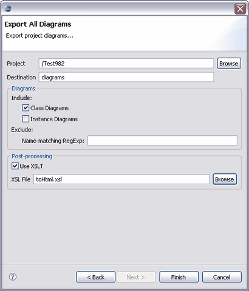

© copyright 2005, 2006, 2007 Cisco Systems, Inc. - All rights reserved
The Diagrams Export tool exports all diagrams in the current Tigerstripe project to .gif files and builds an XML index file that can be further processed through an XSL.

If the target directory doesn't exist within the project to be exported, it will be automatically created. For all diagrams matching the selection criteria, a .gif file is created. The files are given an number that is then referenced in the XML index.
An XML index file is created using the name of the project.
Optionaly, an XSL tranformation will be applied to the XML index. The result will be saved in an "index.html" file in the same directory.

© copyright 2005, 2006, 2007 Cisco Systems, Inc. - All rights reserved